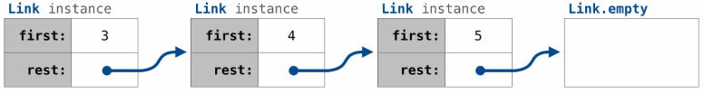

Linked Lists
Table of Contents
1. Linked Lists
A linked list is a way to represent a data sequence. A linked list is either empty or a first value and a pointer to the rest of the linked list. For example, to represent the sequence 3, 4, 5, the structure of the linked list would be:

Each node of a linked list, then, is a pair: first, which is the value of its own element, then rest, which points to the next node in the rest of the linked list.
1.1. Implementation
Here is an implementation of a linked list class:
class Link: empty = () def __init__(self, first, rest=empty): assert rest is Link.empty or isinstance(rest, Link) self.first = first self.rest = rest
Example: Range, map, and filter for linked lists
We want to implement our own range_link, map_link, and filter_link functions for our linked list implementation. To do this, we will often need to use recursion:
def range_link(start, end): if start >= end: return Link.empty else: return Link(start, range_link(start + 1, end)) def map_link(f, s): if s is Link.empty: return s else: return Link(f(s.first), map_link(f, s.rest)) def filter_link(f, s): if s is Link.empty: return s filtered_rest = filter_link(f, s.rest) if f(s.first): return Link(s.first, filtered_rest) else: return filtered_rest